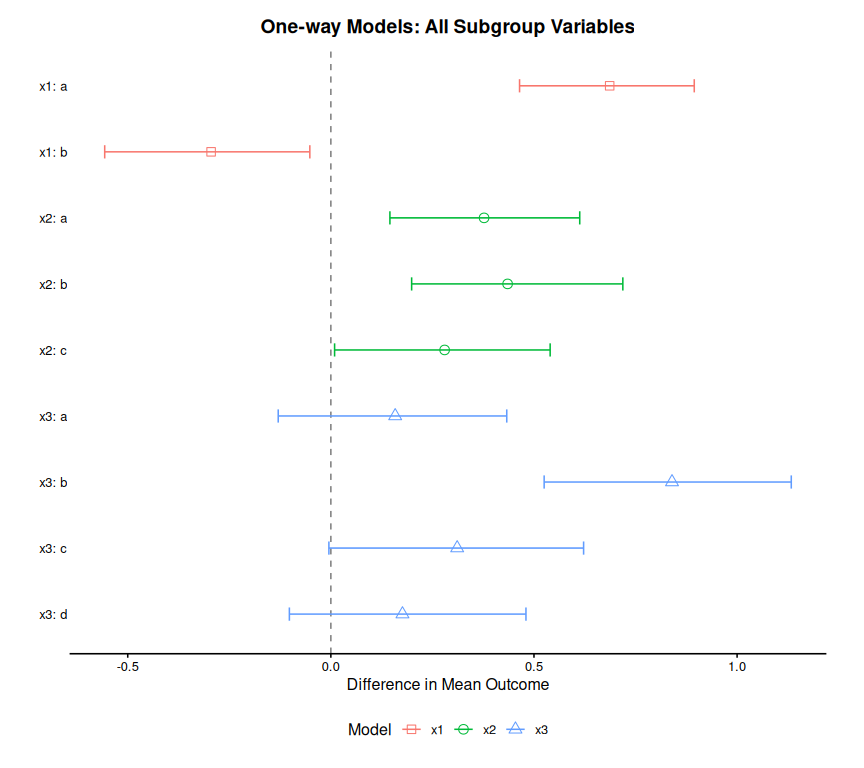
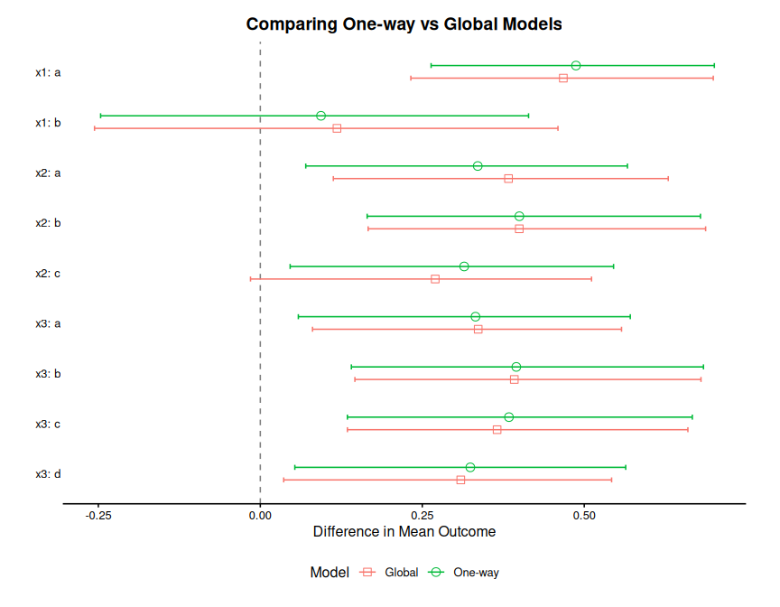

Quickstart
Miriam Pedrera Gomez, Isaac Gravestock, and Marcel Wolbers
Source:vignettes/Quickstart.Rmd
Quickstart.Rmd1 Introduction
The bonsaiforest2 package consists of 3 core functions which are typically called in sequence:
-
run_brms_analysis()- Prepares the model formula and fits the Bayesian shrinkage model usingbrms -
summary_subgroup_effects()- Derives standardized treatment effect estimates from the fitted model and displays them -
plot()- Creates a basic forest plot from the summary object
The package supports both one-way shrinkage models, which fit a separate Bayesian shrinkage model for each subgrouping variable, and global shrinkage models, which fit a single model including all subgrouping variables at once. For both types of models, treatment effect estimates in subgroups are derived via standardization (G-computation) .
The package supports continuous, binary, time-to-event (Cox), and count outcomes. It leverages brms and Stan for model fitting, allowing for a flexible choice of priors, including normal, regularized horseshoe, and R2-D2.
A comprehensive description of the methodology implemented in this R package can be found in Wolbers et al. (2026).
This vignette demonstrates how to use the package to fit and compare these different modeling approaches You’ll learn how to:
- Fit one-way models
- Fit global models
- Derive standardized treatment effect estimates from the fitted model and displays them
- Visualize and compare results from different model specifications
It assumes that bonsaiforest2, brms, and a R interface to Stan (e.g., cmdstanr) have been installed.
2 The Data
We will use the simulated shrink_data dataset which is included in the package.
For this vignette, we will use the continuous outcome variable y, the treatment assignment trt, and three categorical subgrouping variables x1, x2, and x3.
Let’s load the libraries and the data.
# Load the main package
library(bonsaiforest2)
library(brms)
# Load the shrink_data package dataset
shrink_data <- bonsaiforest2::shrink_data
print(head(shrink_data))
#> id trt x1 x2 x3 y response tt_event event_yn fup_duration count
#> 1 1 0 a b b 5.864030 0 22.94233 1 24 1
#> 2 2 1 b c d 4.464349 0 49.13731 0 24 0
#> 3 3 1 a b d 6.379085 1 59.90381 0 24 2
#> 4 4 0 b b d 5.002507 0 21.25450 1 24 1
#> 5 5 1 a b c 5.652024 0 59.80762 0 24 1
#> 6 6 1 b b a 5.427096 0 22.81750 1 24 03 Choice of hyperprior parameters
In our example, we anchor parameters of the hyperprior in trial assumptions about the anticipated size of the overall treatment effect and the standard deviation as proposed by Wolbers et al. (2026). We assume that the data is from a randomized trial which targeted a treatment effect of \(\delta_{plan}=0.3\) and assumed a standard deviation of \(\sigma_{plan}=1\).
Specifically, we use the following priors for the shrunken predictive effects in the one-way and global models below:
- One-way shrinkage model: a normal prior with a half-normal hyperprior and heterogeneity parameter \(\phi=\delta_{plan}=0.3\) for the standard deviation
-
Global shrinkage models: a regularized horseshoe priors with parameters
scale_global\(\tau_0 = \delta_{plan}=0.3\),scale_slab\(s = 2\sigma_{plan} = 2\) anddf_slab\(\nu = 4\)
4 One-way shrinkage models
A simple one-way shrinkage model for a categorical subgrouping variable x is a Bayesian regression model of the form y ~ 1 + trt + x + trt:x with a normal shrinkage prior applied to the treatment-by-subgroup interactions. For efficient computation, it is preferable, to reformulate the model as a Bayesian random effects model of the form y ~ 1 + trt + x + (0+trt || x) where the term (0+trt || x) refers to random treatment effects per subgroups defined by levels of x, i.e. treatment-by-subgroup interactions. As discussed, we specify a normal distribution for the random effects representing treatment-by-subgroup interactions with a half-normal hyperprior with heterogeneity parameter \(\phi=\delta_{plan}=0.3\) for the standard deviation.
In the code below, we fit three separate models for x1, x2, and x3, respectively. We extend the simple model described above by including all three subgrouping variables as unshrunken prognostic terms. While this extension is not mandatory, adjustment for prognostic variables can improve the precision of treatment effect estimates as illustrated in the simulation study for a continuous endpoint in Wolbers et al. (2026).
4.1 One-way model for x1
# Fit one-way model using only x1 as a predictive subgrouping variable
# Random effects notation (0 + trt || x1) estimates varying treatment slopes by levels of x1
oneway_x1 <- run_brms_analysis(
data = shrink_data,
response_type = "continuous",
response_formula = y ~ trt,
unshrunk_terms_formula = ~ x1 + x2 +x3,
shrunk_predictive_formula = ~ (0 + trt || x1),
shrunk_predictive_prior = set_prior("normal(0, 0.3)", class = "sd"),
chains = 2, iter = 2000, warmup = 1000, cores = 2,
refresh = 0, backend = "cmdstanr"
)
#> Running MCMC with 2 parallel chains...
#>
#> Chain 1 finished in 1.9 seconds.
#> Chain 2 finished in 2.4 seconds.
#>
#> Both chains finished successfully.
#> Mean chain execution time: 2.2 seconds.
#> Total execution time: 2.6 seconds.
summary_oneway_x1 <- summary_subgroup_effects(brms_fit = oneway_x1)
print(summary_oneway_x1)
#> $estimates
#> # A tibble: 2 × 4
#> Subgroup Median CI_Lower CI_Upper
#> <chr> <dbl> <dbl> <dbl>
#> 1 x1: a 0.487 0.264 0.701
#> 2 x1: b 0.0937 -0.246 0.414
#>
#> $response_type
#> [1] "continuous"
#>
#> $ci_level
#> [1] 0.95
#>
#> $trt_var
#> [1] "trt"
#>
#> attr(,"class")
#> [1] "subgroup_summary"
4.2 One-way model for x2
oneway_x2 <- run_brms_analysis(
data = shrink_data,
response_type = "continuous",
response_formula = y ~ trt,
unshrunk_terms_formula = ~ x1 + x2 +x3,
shrunk_predictive_formula = ~ (0 + trt || x2),
shrunk_predictive_prior = set_prior("normal(0, 0.3)", class = "sd"),
chains = 2, iter = 2000, warmup = 1000, cores = 2,
refresh = 0, backend = "cmdstanr"
)
#> Running MCMC with 2 parallel chains...
#>
#> Chain 1 finished in 1.5 seconds.
#> Chain 2 finished in 1.5 seconds.
#>
#> Both chains finished successfully.
#> Mean chain execution time: 1.5 seconds.
#> Total execution time: 1.6 seconds.
summary_oneway_x2 <- summary_subgroup_effects(brms_fit = oneway_x2)
4.3 One-way model for x3
oneway_x3 <- run_brms_analysis(
data = shrink_data,
response_type = "continuous",
response_formula = y ~ trt,
unshrunk_terms_formula = ~ x1 + x2 +x3,
shrunk_predictive_formula = ~ (0 + trt || x3),
shrunk_predictive_prior = set_prior("normal(0, 0.3)", class = "sd"),
chains = 2, iter = 2000, warmup = 1000, cores = 2,
refresh = 0, backend = "cmdstanr"
)
#> Running MCMC with 2 parallel chains...
#>
#> Chain 1 finished in 1.5 seconds.
#> Chain 2 finished in 1.6 seconds.
#>
#> Both chains finished successfully.
#> Mean chain execution time: 1.6 seconds.
#> Total execution time: 1.7 seconds.
summary_oneway_x3 <- summary_subgroup_effects(brms_fit = oneway_x3)4.4 Forest plot of results from all one-way models
You can combine and visualize results from multiple models using combine_summaries():
# Combine all one-way models
combined_oneway <- combine_summaries(list(
"x1" = summary_oneway_x1,
"x2" = summary_oneway_x2,
"x3" = summary_oneway_x3
))
plot(combined_oneway, title = "One-way Models: All Subgrouping Variables")
#> Preparing data for plotting...
#> Generating plot...
#> Done.
5 Global shrinkage model
A simple global shrinkage model for our setting has the form y~ 1 + trt + x1 + x2 + x3 + trt:x1 + trt:x2 + trt:x3 where a shrinkage prior is applied to all treatment-by-subgroup interaction terms. As discussed, we use a regularized horseshoe prior with parameters scale_global \(\tau_0 = \delta_{plan}=0.3\), scale_slab \(s = 2\sigma_{plan} = 2\) and df_slab \(\nu = 4\) in the example below. Standardized treatment effects in subgroup defined by the levels of a single subgrouping variable at a time are subsequently derived from this model via G-computation.
5.1 Model fitting
# Fit a single unified model with ALL subgrouping variables simultaneously using global approach
global_shrinkage_model <- run_brms_analysis(
data = shrink_data,
response_type = "continuous",
response_formula = y ~ trt,
unshrunk_terms_formula = ~ 1 + x1 + x2 + x3,
shrunk_predictive_formula = ~ 0 + trt:x1 + trt:x2 + trt:x3,
shrunk_predictive_prior = "horseshoe(scale_global=0.3, scale_slab = 2, df_slab = 4, autoscale = FALSE)",
chains = 2, iter = 2000, warmup = 1000, cores = 2,
refresh = 0, backend = "cmdstanr"
)
#> Running MCMC with 2 parallel chains...
#>
#> Chain 1 finished in 3.7 seconds.
#> Chain 2 finished in 3.8 seconds.
#>
#> Both chains finished successfully.
#> Mean chain execution time: 3.8 seconds.
#> Total execution time: 3.9 seconds.5.2 Summary of subgroup effects
The function summary_subgroup_effects() derives standardized treatment effects in subgroups from the global model. Internally, subgrouping variables are identified as all terms describing treatment-by-covariate interactions provided in the formulas.
global_summary <- summary_subgroup_effects(brms_fit = global_shrinkage_model)
#> --- Calculating specific subgroup effects... ---
#> Step 1: Identifying subgroups and creating counterfactuals...
#> ...detected subgroup variable(s): x1_onehot, x2_onehot, x3_onehot
#> Step 2: Generating posterior predictions...
#> Step 3: Calculating marginal effects...
#> Done.
# Print the summary of subgroup-specific treatment effects
print(global_summary)
#> $estimates
#> # A tibble: 9 × 4
#> Subgroup Median CI_Lower CI_Upper
#> <chr> <dbl> <dbl> <dbl>
#> 1 x1: a 0.468 0.232 0.699
#> 2 x1: b 0.118 -0.256 0.459
#> 3 x2: a 0.383 0.113 0.630
#> 4 x2: b 0.400 0.166 0.687
#> 5 x2: c 0.270 -0.0151 0.511
#> 6 x3: a 0.336 0.0806 0.558
#> 7 x3: b 0.392 0.146 0.680
#> 8 x3: c 0.365 0.134 0.660
#> 9 x3: d 0.309 0.0361 0.542
#>
#> $response_type
#> [1] "continuous"
#>
#> $ci_level
#> [1] 0.95
#>
#> $trt_var
#> [1] "trt"
#>
#> attr(,"class")
#> [1] "subgroup_summary"6 Comparing Multiple Models in One Plot
The plot() function supports comparing multiple models side-by-side by passing a in a forest plot by passing a named list of subgroup_summary objects.
# Combine summaries for comparison
combined <- combine_summaries(list(
"One-way" = combined_oneway,
"Global" = global_summary
))
# Plot the comparison
plot(combined, title = "Comparing One-way vs Global Models")
#> Preparing data for plotting...
#> Generating plot...
#> Done.